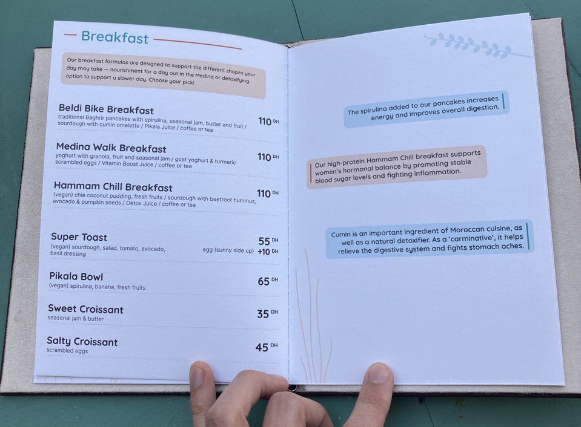

I specialise in audiovisual programming on the Web. I write mainly modern JavaScript, but also Python, SASS, C++, Swift and Rust. My past clients include
Around,
greyworld and
XL Recordings.
Some notable projects are below (more available on GitHub):
Pikala

I have designed and developed the new website for Pikala, a Moroccan non-profit using bicycles to
promote sustainable mobility, education and social progress in a number of Moroccan cities.
I developed a new visual language based on the existing Pikala brand, which is suitable for both
digital and print publications (e.g. the new Pikala Cafe menu). The website itself is a performant statically generated site
with GitHub acting as the CMS.
I've spent 4 years at Ecosia, the search engine that plants trees. I initially focused on transforming a legacy monolithic application into a modern microservice system fronted by performant Vue-based web applications.
After completing this multi-year process, I helped conceive and execute a reorganisation into three specialised Search teams. I took on technical leadership of the new Rich Content team, which uses large datasets, query understanding and context-sensitive user interfaces to answer more of our users' queries, and answer them better. I co-led the org-wide rebranding project and co-authored the new Frontend technical strategy.
In my last few months, I built a specialised in-house web app framework called Taproot, which will make the Ecosia search experience more performant, future-proof and give the engineering teams profound control over theit applications.
I developed the web application for Calculating Control: (NetArt and Cybernetics) exhibition
by the Berlin-based Zentrum für Netzkunst. The Vue-based single-page application was designed by Anna Lorenz and consisted of a
living archive of research materials collected by the ZfN members, with Zotero serving as the backend API.
A library of React components for building Web Audio graphs I developed at BBC R&D.
Aims to provide a more intuitive, declarative interface to Web Audio, making it easier
to build complex audio applications on the Web.
My first project at the Wellcome Trust was the redesign of the corporate website.
I worked closely with UI and UX designers, content editors and management to create
a performant and clean front-end experience. I then focused on refactoring the legacy
PHP backend and creating a modular UI system for the site.
For the annual Wellcome funding report, we decided to create reusable
interactive chart modules, which would improve accessibility and increase
transparency in publishing our funding data.
I created a custom SVG-based rendering library along with a standard
JSON schema for the chart data. All charts were rendered with additional markup
for screen readers. I also built a web-based tool for content editors to
create chart data from CSV files or manually.
In 2017 I was the principal developer on a full redesign and re-engineering
of Mosaic, Wellcome's longreads publication on health, culture and society. We used an
unconventional technology stack with a Drupal backend serving as a publishing service,
and the site itself being rendered onto Amazon S3 using Dockerized rendering services,
SQS and Terraform.
The site itself was given a fresh look, improved accessibility, performance and
ever-changing generative design elements throughout.
An audiovisual-literary web epic created by the Hungarian experimental band
Dorota. I used Web Audio and hand-crafted CSS3
animation to build an immersive experience of the beautiful world of Frik.